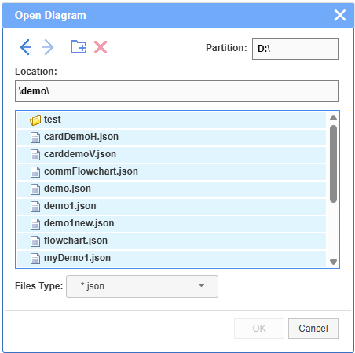
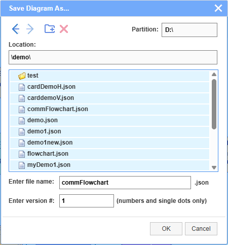

The editor has a proprietary file system browser that is accessible when the editor is connected to the server. It has full access to the file system to open, save and delete files, as well as to display, create and delete folders. The created diagrams, in JSON format, can be saved in existing folders or in newly created ones. Currently the file browser works under Windows. The server connection uses node.js.
NOTE: Due to some current limitations of node.js libraries, the file browser can access only the file structures or the disk partition where the JDElite Data Modeler is installed and launched from. Files and folders with names containing spaces are not accepted.
A view of the browser in OPEN mode:

The actions prompted by the buttons on the top of the file browser are as follows:
 - Move one level up
- Move one level up
 - Move one level down
- Move one level down
- Create new folder at the current location
 - Delete the selected file of folder
- Delete the selected file of folder
A view of the brouser in SAVE mode:
